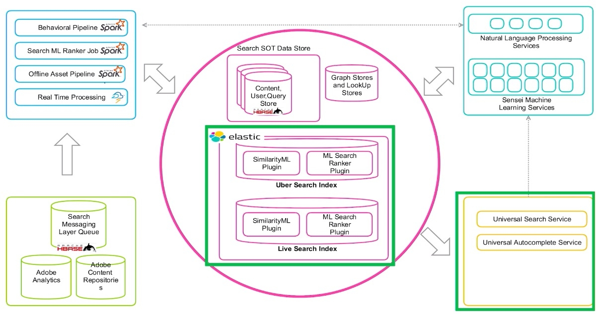

Elastic @ Adobe: Making Search Smarter with Machine Learning at Scale
Adobe is one of the most known companies in the computer software domain. Their landmark product is the PDF file format, used for presenting documents that include text and graphical content.
Other popular softwares include Adobe Photoshop, Adobe Acrobat Reader, Adobe Illustrator, etc. The company has historically been engaged in the area of multimedia, but recently it has also shifted towards digital
marketing software.
In the presentation given by G. Kukal and B. Faieta, they describe how
Adobe is scales and manages multiple use cases by fusing Machine Learning and Elastic Search. Adobe has a wide range of services that relies on efficient search. One such service is the Adobe Stock, where users can
search for images and use them in their creative projects. Initially, the ES clusters were hosted on AWS, but then they've decided to move them on self-managed clusters on public clouds. Some reasons for doing this were
the obvious cost saving and the possiblity of using ES as a white-box, for desingin their own ES plugins. The architecture of search at Adobe is depicted in the figure below.

As you can see from the depicted architecture, the "secret sauce" as described by the authors consists in the two plugins, namely the SimilarityML Plugin and the ML Search Ranker Plugin. In order to be able to
efficiently search images, they had to develop the so named PQ-Codes, which are minimal representations for embeedings that are learned using deep learning. This way, the ES plugin can implement the comparison
between querry embedding and pq-codes. They also use Reverse Index for embeddings to group the corpus in buckets, making the search more efficient.